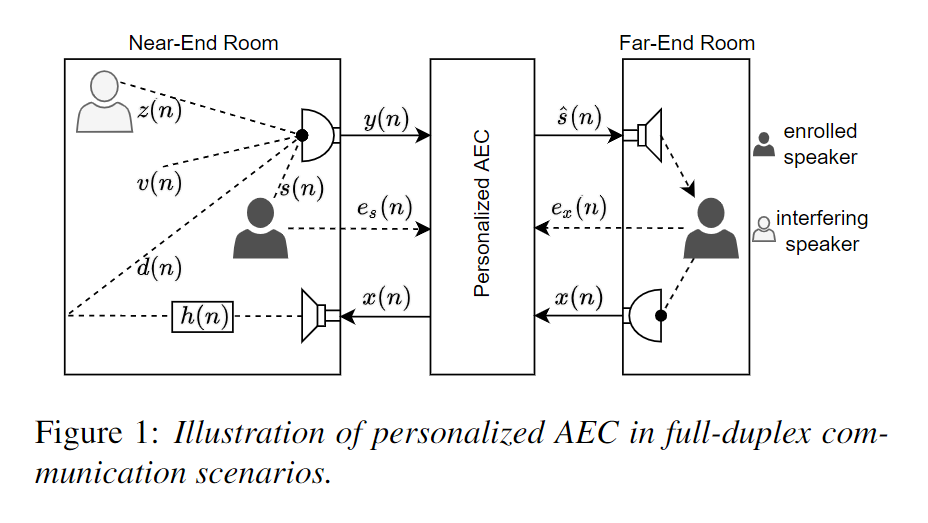
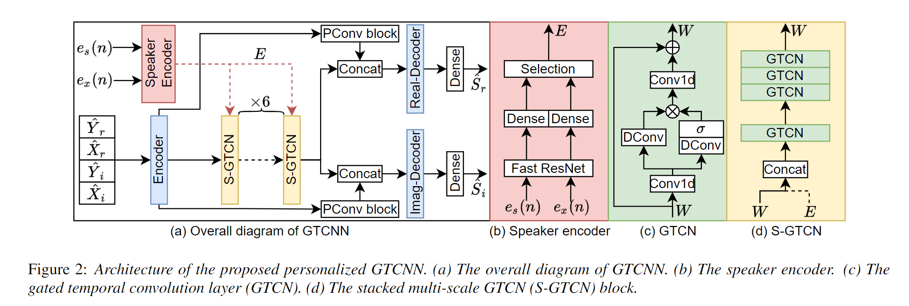

Deep neural networks (DNNs) have shown promising results for acoustic echo cancellation (AEC). But the DNN-based AEC models let through all near-end speakers including the interfering speech. In light of recent studies on personalized speech enhancement, we investigate the feasibility of personalized acoustic echo cancellation (PAEC) in this paper for full-duplex communications, where background noise and interfering speakers may coexist with acoustic echoes. Specifically, we first propose a novel backbone neural network termed as gated temporal convolutional neural network (GTCNN) that outperforms state-of-the-art AEC models in performance. Speaker embeddings like d-vectors are further adopted as auxiliary information to guide the GTCNN to focus on the target speaker. A special case in PAEC is that speech snippets of both parties on the call are enrolled. Experimental results show that auxiliary information from either the near-end speaker or the far-end speaker can improve the DNN-based AEC performance. Nevertheless, there is still much room for improvement in the utilization of the finite-dimensional speaker embeddings.


2. The corresponding reference, enrolled speech and label